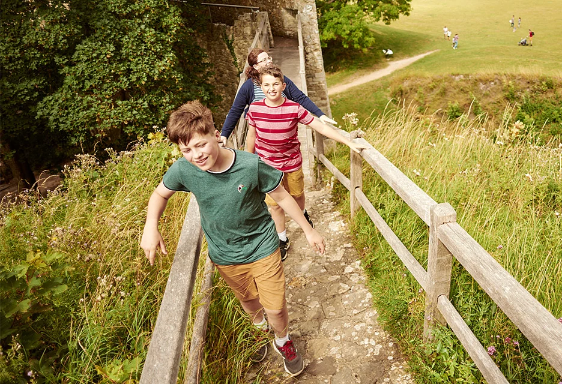
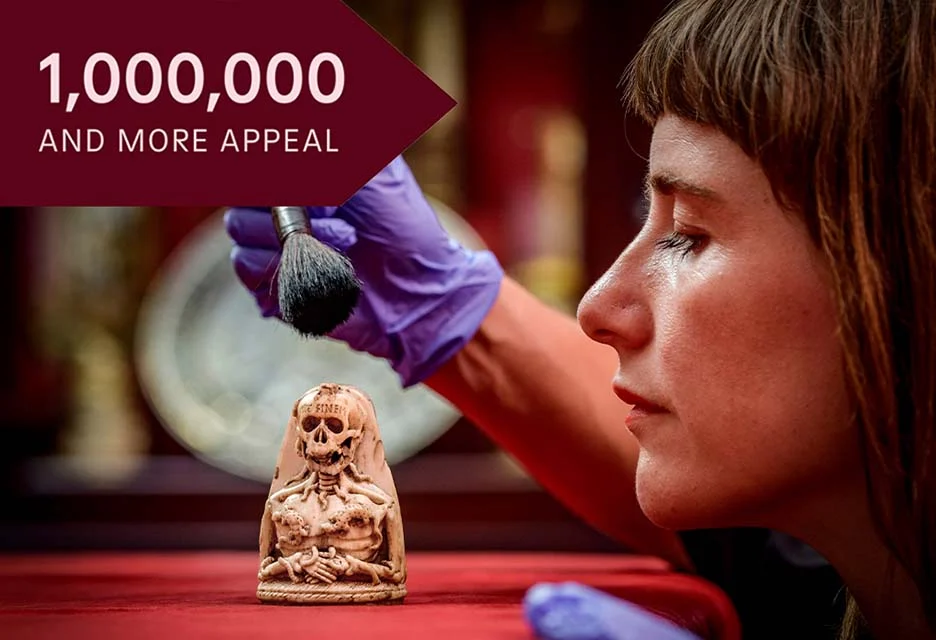

Preserving Osun's Heritage
Welcome to the official site for discovering and preserving Osun's rich cultural and historical legacy. Learn more about our journey and how you can be a part of it.

Join
Become a member today from ₦1000 a year and enjoy a host of benefits including free entry for you and up to six kids
JoinVisit
Treat Dad and the family to a memorable day out at one of over 400 historic places across the country
Explore

Million and More Appeal
Help to preserve over a million stories – donate to our appeal today
Donate Now